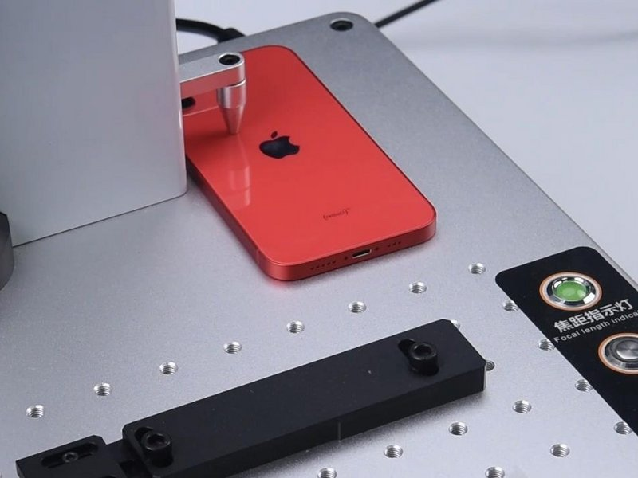
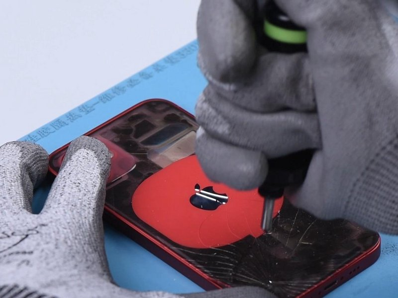
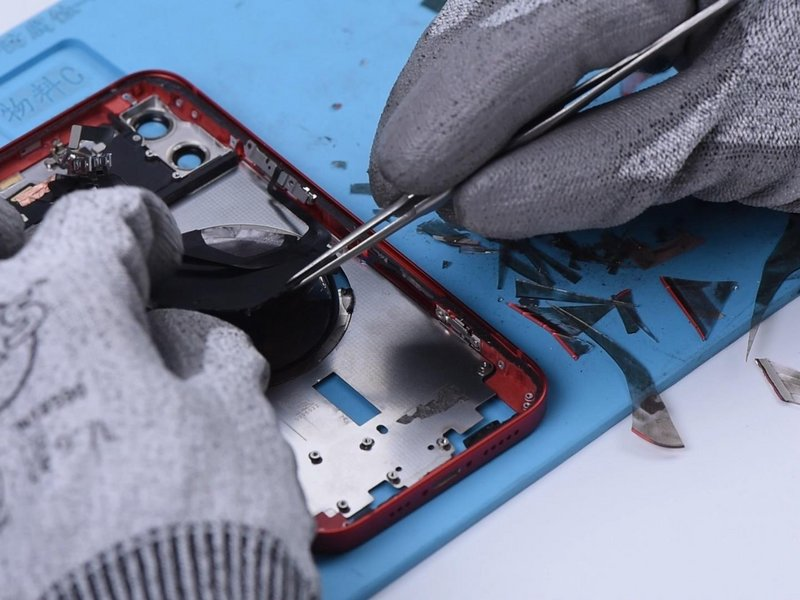
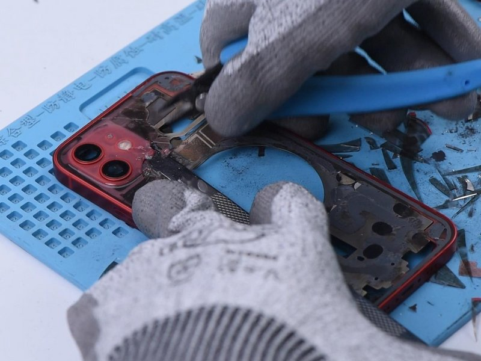
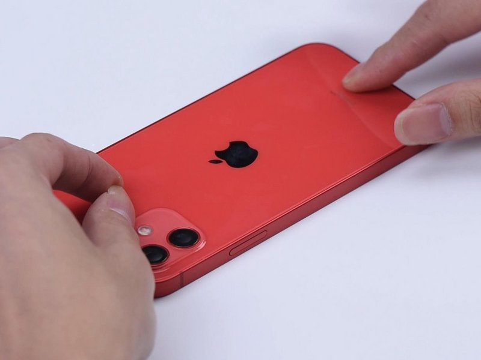
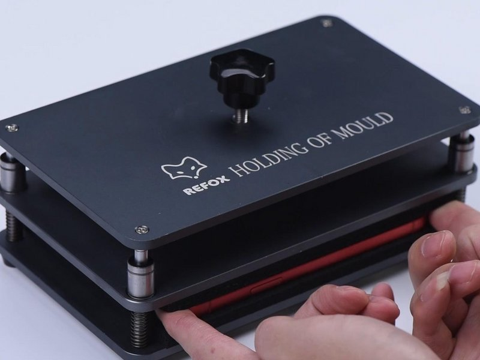
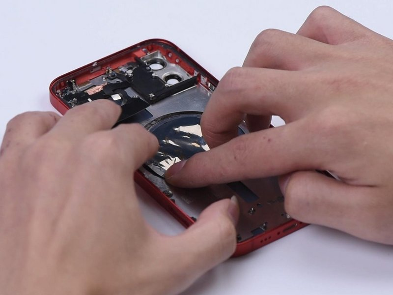

Chassis profile
The 2020 iPhone 12 is a 6.1-inch Lightning model. Flat-sided 5G model with MagSafe hardware behind the rear housing.
Model-Specific Tutorial
This iPhone 12 back glass guide is written as a standalone bench page. It explains the 2020 6.1-inch chassis, the parts most likely to be damaged, and the checks to make before the phone is sealed again.

Model Notes
The 2020 iPhone 12 is a 6.1-inch Lightning model. Flat-sided 5G model with MagSafe hardware behind the rear housing.
This page focuses on how to control heat, protect cameras and wireless charging parts, manage glass fragments, and reseal the rear assembly cleanly. The 7 photo steps are kept in bench order so the screw table and the visible part position stay aligned.
Keep heat source, eye protection, opening picks ready first, then add plastic cards, tweezers, adhesive strips as the phone opens.
After the repair, inspect camera openings, wireless charging area, flash alignment, glass fragment cleanup, and even rear-panel pressure. If anything fails, reopen before adhesive pressure makes the correction harder.
Start Here
Use this iPhone 12 guide for shattered rear glass, sharp cracks, damaged camera surround, wireless charging problems, or rear housing repair planning. The photos are arranged as a practical bench sequence so you can stop after each action and compare the part position.
Flat-sided 5G model with MagSafe hardware behind the rear housing. For this back glass repair, watch broken glass, camera lenses, wireless charging coil, flash cable, battery heat exposure, and rear adhesive alignment.
Check camera openings, wireless charging area, flash alignment, glass fragment cleanup, and even rear-panel pressure. This final check matters more on iPhone 12 because flat-sided 5G model with MagSafe hardware behind the rear housing.
US Repair Search Notes
This guide is written for US repair searches around iPhone 12 back glass replacement cost, cracked rear glass repair, camera lens area damage, wireless charging issue checks, and housing repair planning. It keeps the model name, repair type, symptom, and part checks together on one page.
Before ordering parts, match the exact iPhone 12 generation, 6.1-inch display size, Lightning connector style, and the rear glass damage, camera ring protection, wireless charging alignment, heat control, and shard cleanup mentioned in this guide.
Pay extra attention to step 4 (Back Glass Separation), step 5 (Back Glass Gluing), and step 7 (Back Glass Gluing). These photos usually decide whether the repair stays clean or needs to be reopened.
A successful iPhone 12 back glass repair should pass the closing checks, sit flush around the frame, and show no new warnings, loose brackets, lifted adhesive, or cable pressure marks.
Step By Step
Follow these 7 photos in order. Each iPhone 12 step includes a model note, the action from the photo, and a risk check for the back glass repair.
iPhone 12 note: iPhone 12 rear glass note: keep heat moving and protect the camera area before sliding a tool deeper.
Put the back glass of iPhone 12 under the focus positioning probe of the laser marking machine. After positioning, mark the back glass area except for the camera and wireless charging area. We haven't marked the wireless charging area to avoid damage.
Glass rule: remove loose shards before pressure is applied, especially near cameras and wireless charging hardware.

iPhone 12 note: iPhone 12 rear glass note: keep heat moving and protect the camera area before sliding a tool deeper.
A new member, Glass Breaking Pen, is coming to our back glass refurbishing tools family. Break the back glass with Glass Breaking Pen and remove the shards with Pry Bar. When breaking the wireless charging area, you can see that the magnets are glued to the glass. Hence the back glass fix solution of iPhone 11 is not suitable for iPhone 12. If we stick to our old method, all magnets will fall off and become separate. The subsequent recovering process will be harder. In addition,...
Glass rule: remove loose shards before pressure is applied, especially near cameras and wireless charging hardware.

iPhone 12 note: iPhone 12 rear glass note: keep heat moving and protect the camera area before sliding a tool deeper.
We should remove the wireless charging coil and then mark. The magnet array and shield can be easily removed after marking.
Glass rule: remove loose shards before pressure is applied, especially near cameras and wireless charging hardware.

iPhone 12 note: iPhone 12 rear glass note: keep heat moving and protect the camera area before sliding a tool deeper.
Then we remove the glass around the camera. Please do not touch the camera lens. After the glass is completely removed, mark the back again to remove residual adhesive.
Glass rule: remove loose shards before pressure is applied, especially near cameras and wireless charging hardware.

iPhone 12 note: iPhone 12 rear glass note: keep heat moving and protect the camera area before sliding a tool deeper.
Clamp a new back glass with enlarged camera holes down to the middle frame first to see if it fits. Apply some adhesive evenly on the middle frame. Put the back glass in position and press it gently against the middle frame.
Glass rule: remove loose shards before pressure is applied, especially near cameras and wireless charging hardware.

iPhone 12 note: iPhone 12 rear glass note: keep heat moving and protect the camera area before sliding a tool deeper.
Press the back glass further against the middle frame with Press Clamp. The adhesive has set after 10 minutes. Take the back cover out. Check if the gap is too large, if there is adhesive overflow, and if the fit is smooth.
Glass rule: remove loose shards before pressure is applied, especially near cameras and wireless charging hardware.

iPhone 12 note: iPhone 12 rear glass note: keep heat moving and protect the camera area before sliding a tool deeper.
After the back glass gluing is finished, we install the magnet array and shield. Apply some B-7000 Adhesive on the magnet circle to adhere the magnet array to the back. Please make sure that the opening of the magnet array is placed in the right position as in the picture. Stick the magnet that we accidentally cut out back on and glue the alignment magnet. Last but not least, assemble the phone and test the MagSafe function. The MagSafe function is normal.
Glass rule: remove loose shards before pressure is applied, especially near cameras and wireless charging hardware.
Screw Map
FAQ
No. Similar generations often share repair ideas, but iPhone 12 has its own 6.1-inch housing, Lightning port layout, screw positions, and cable routing.
For this back glass repair, test camera openings, wireless charging area, flash alignment, glass fragment cleanup, and even rear-panel pressure. Do this before final adhesive pressure.
The table highlights steps where length or bracket position matters. Mixed screws are one of the easiest ways to turn a simple iPhone 12 repair into board damage.
Stop if heat becomes excessive, a connector will not align, the battery bends, or glass fragments move toward cameras, cables, or the board.
References